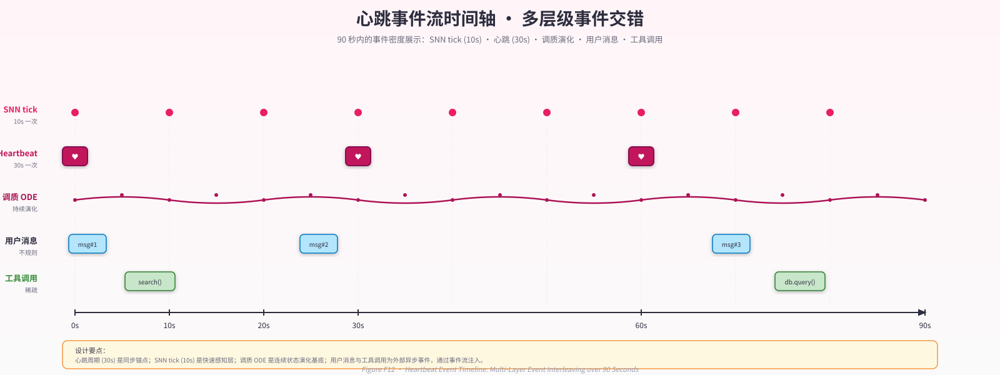

第 9 章 · 中枢心跳、事件代数与状态持久化¶
"心跳是 Neo-MoFox 这个系统的字面意义上的脉搏。每 30 秒，一个定时器在
LifeEngineService._heartbeat_loop中触发一次完整的'内省—决策—行动—持久化'循环。这个 30 秒并非随意选择——它对应人类工作记忆的刷新周期，在'频繁到能感知时间流逝'与'稀疏到不空耗算力'之间取得平衡。"
— 内部设计文档，2026-04
9.1 设计动机：心跳是连续性的"脉搏"¶
第 3 章给出了连续性的形式化定义：
这一命题要求系统存在某个机制，使得内在状态向量 \(\mathbf{s}(t)\) 即使在两次用户消息之间仍在演化。心跳（heartbeat）正是这一机制的工程实现——它是系统的"内源性时钟"，不依赖外部刺激触发，以固定节律主动推进系统状态。
在没有心跳的"离散存在"范式中，AI 系统的状态更新完全由外部消息驱动。用户不发话，系统便沉默；系统不仅"无言"，而且在内部什么都不计算、什么都不演化。两次对话之间的时间间隔对这类系统没有物理意义——无论是 5 分钟还是 5 天，系统重新被唤起时看到的只是一段被序列化好的文本上下文。
Neo-MoFox 的双轨架构（见第 4 章）将这种被动响应交由 DFC（Dialogue Flow Controller）处理，而生命中枢（Life Engine）则以独立于 DFC 的节律运行心跳。这使"连续存在"从一个设计意图落地为可观测的代码行为：每 30 秒，生命中枢的内在状态——调质浓度、SNN 膜电位、事件历史、习惯 streak——至少会被更新一次。
心跳间隔可配置（heartbeat_interval_seconds，默认 30 秒），但这一默认值的选取有一定的神经科学依据。Miller (1956) 的工作记忆研究表明，人类工作记忆的保持时长约为 15–30 秒；认知心理学中的注意刷新周期（attentional refreshing cycle）同样在这一量级。30 秒心跳让系统在"能感知时间流逝"（\(\Delta t\) 不为零）与"算力预算允许"（不过于频繁地启动 LLM 调用）之间取得平衡。
需要直接说明的是：心跳设计并不能"凭空"制造有意义的内省。一次空闲心跳——没有新消息、没有工具调用、LLM 回复千篇一律的"现在很安静"——在系统涌现智能的意义上几乎没有贡献。心跳的价值在于为其他子系统（SNN、调质、记忆）提供时间锚点，并在累积足够事件时触发真正有意义的内省与行动。
9.2 心跳循环：10 步精确流程¶
生命中枢的核心逻辑位于 LifeEngineService._heartbeat_loop（plugins/life_engine/service/core.py:1869）。该函数是一个无限 while 循环，每次迭代对应一次心跳周期。以下逐步重建其 10 步完整流程：
Step 0 — 可中断等待
await asyncio.wait_for(self._stop_event.wait(), timeout=interval)
# interval = cfg.settings.heartbeat_interval_seconds (默认 30s)
使用 asyncio.wait_for 而非 asyncio.sleep，确保收到停止信号时能立即退出，而不是阻塞在睡眠中（core.py:1875）。
Step 1 — 睡眠窗口检查
若当前时间落在 [sleep_time, wake_time] 区间内，心跳进入睡眠分支：仅运行做梦检查（dream_scheduler.should_dream()）并跳过 LLM 调用，对应睡眠期间的"身体不动但梦仍在做"语义。睡眠窗口支持跨午夜配置（如 23:00–07:00）。
Step 2 — 心跳计数与时间戳更新
heartbeat_count 是跨重启持久化的单调计数器，同时用于日志审计与可观测性快照。
Step 3 — 每日记忆衰减
检查今日是否已执行 Ebbinghaus 衰减（基于 _last_decay_date 日期字符串比对）。若是当天首次心跳，则对所有记忆节点执行 \(\exp(-\lambda \cdot \Delta \text{days})\) 衰减（见第 7 章 §7.3）。注意：_last_decay_date 不持久化（见 §9.8 不变式五的讨论）。
Step 4 — SNN 前置更新
内部依次执行：从最近 600 秒事件中提取 8 维特征向量 → snn_network.step(features) → inner_state.tick(snn_drives, event_stats) 更新调质浓度。这是心跳中"自下而上"信号流的核心链路（详见第 5、6 章）。
Step 5 — 构建唤醒上下文（Wake Context）
该函数依次完成：drain_pending_events() 消费所有待处理事件 → _append_history(events) 追加到事件历史 → _build_wake_context_text() 将事件流序列化为结构化文本 → 写入 SystemReminderBucket 的 actor bucket。这是 LLM 心跳"看到"的主要输入。
Step 6 — 静默暂停检查
if self._should_pause_llm_heartbeat_for_external_silence(): # core.py:1915
await self._snn_integration.heartbeat_post()
continue # 跳过 LLM，但不跳过 SNN 后置更新
若外部静默超过 idle_pause_after_external_silence_minutes（默认 30 分钟，0 表示不暂停），则跳过 LLM 调用以节省算力。重要：此时 SNN 仍执行后置更新（Step 8），维持皮层下系统的连续演化。
Step 7 — LLM 心跳调用
model_reply = await self._run_heartbeat_model(wake_context) # core.py:1596
await self._record_model_reply(model_reply)
_run_heartbeat_model 构建完整的系统 prompt（SOUL.md + MEMORY.md + 工具说明）与用户 prompt（事件流 + 调质状态 + 思考流 + 冲动建议），发起 LLM 调用，并进入最多 max_rounds_per_heartbeat（默认 3）轮工具调用循环。工具调用的每次执行均产生 TOOL_CALL + TOOL_RESULT 两条事件追加到 pending_events，供下次心跳消费。
Step 8 — SNN 后置更新（奖赏计算）
基于本次心跳的工具调用结果计算奖赏信号（bridge.py:189），通过软 STDP 更新突触权重。奖赏公式：
奖赏 \(r \in [-1, 1]\)，通过 `reward_factor = 1.0 + \text{clip}(r, -1, 1)$ 调制 STDP 更新幅度。
Step 9 — 白天小憩检查
if self._dream_scheduler.should_dream(self._state.idle_heartbeat_count, in_sleep=False):
report = await self._dream_scheduler.run_dream_cycle(event_history) # core.py:1935
若启用白天小憩（nap_enabled=True）且连续空闲心跳次数 ≥ idle_trigger_heartbeats（默认 10），则触发一次离线巩固做梦周期（详见第 8 章）。
Step 10 — 状态持久化
将完整系统状态原子写入 life_engine_context.json（见 §9.7）。
（见 Figure F12 心跳事件流时间轴）

Figure F12 · 心跳事件流时间轴（多事件交错）
整个 10 步循环在正常运行时约耗时 2–15 秒（含 LLM 调用延迟），与 30 秒心跳间隔之间存在约 15–28 秒的空闲窗口，该窗口由 SNN 独立 tick 循环（§9.9）填充。
9.3 事件代数：LifeEngineEvent 数据结构¶
事件（event）是生命中枢的基本信息单元。一切发生在系统中的有意义的事务——用户的消息、心跳的回复、工具的调用与返回——都被编码为 LifeEngineEvent 并压入全局有序事件流。
LifeEngineEvent 定义于 plugins/life_engine/service/event_builder.py:26，使用 Python @dataclass(slots=True) 以减少内存开销。字段全表如下：
| 字段 | 类型 | 含义 | 是否条件字段 |
|---|---|---|---|
event_id |
str |
事件唯一标识，格式依类型而异 | ❌ |
event_type |
EventType |
枚举：MESSAGE / HEARTBEAT / TOOL_CALL / TOOL_RESULT | ❌ |
timestamp |
str |
ISO 8601 时间字符串 | ❌ |
sequence |
int |
全局单调序列号（跨重启持久化） | ❌ |
source |
str |
来源平台名（如 "qq"）或 "life_engine" |
❌ |
source_detail |
str |
详细描述，如 "qq | 入站 | 群聊 | 测试群" |
❌ |
content |
str |
事件内容，截断至 240 字符 | ❌ |
content_type |
str |
具体子类型，见 §9.4 | ❌ |
sender |
str \| None |
发送者名称 | 仅 MESSAGE |
chat_type |
str \| None |
"group" / "private" / "discuss" |
仅 MESSAGE |
stream_id |
str \| None |
聊天流 ID | 仅 MESSAGE |
heartbeat_index |
int \| None |
心跳编号，-1 表示压缩摘要事件 |
仅 HEARTBEAT |
tool_name |
str \| None |
工具名称 | 仅 TOOL_CALL |
tool_args |
dict \| None |
工具参数字典 | 仅 TOOL_CALL |
tool_success |
bool \| None |
工具执行成功与否 | 仅 TOOL_RESULT |
content 被硬截断至 240 字符，这一设计决策以可观测性为代价换取了事件流的可控体积——完整工具结果存于工具系统，事件流仅记录摘要。
event_id 的格式编码了事件类型语义：
- "msg_{platform_id}" — 外部消息
- "hb_{heartbeat_index}_{sequence}" — 心跳回复
- "tool_call_{sequence}" — 工具调用
- "tool_result_{sequence}" — 工具结果
这种 ID 命名约定使事件流具备直接的人类可读性，便于审计与调试。
9.4 四种事件类型¶
事件类型（EventType）是事件代数中的最高层分类。四种类型形成一个覆盖完整的分区：任何进入系统的有意义事务必属其一。
MESSAGE — 外部信号
代表来自系统外部的信息注入。content_type 进一步区分：
- "text"：来自聊天平台（QQ、微信等）的用户消息
- "dfc_message"：DFC 对话模式的留言（DFC 处理完一次对话后可向中枢留言）
- "direct_message"：命令行直接注入
- "proactive_opportunity"：proactive_message_plugin 通知中枢"当前是主动发起对话的好时机"
MESSAGE 类型事件触发系统从"内省"模式切换为"感知—响应"模式。它们同时作为 SNN 特征提取的原始输入（msg_in 计数进入 8 维特征向量）。
HEARTBEAT — 内源性输出
记录生命中枢 LLM 的心跳回复。content_type 区分：
- "heartbeat_reply"：心跳 LLM 的正常回复
- "chatter_inner_monologue"：life_chatter 对话子模式的内心独白
- 特殊：heartbeat_index = -1 是压缩摘要事件（见 §9.6），同样使用 HEARTBEAT 类型作为容器
HEARTBEAT 事件是系统"自言自语"的载体——即使完全没有外部消息，心跳 LLM 仍可能产出思考、计划或情绪表达，这些均以 HEARTBEAT 事件记录。
TOOL_CALL — 行动记录
记录心跳 LLM 发出的每一次工具调用。tool_name 和 tool_args 字段提供完整的调用语义。工具调用是生命中枢从"思考"走向"行动"的关键一步——无论是写日记（nucleus_write_file）、搜索记忆（nucleus_search_memory），还是向 DFC 发出信号（nucleus_tell_dfc），均留有可审计的 TOOL_CALL 事件。
TOOL_RESULT — 行动反馈
紧跟在 TOOL_CALL 之后，记录工具执行结果。tool_success 字段是奖赏信号计算的直接输入（Step 8）。TOOL_CALL 与 TOOL_RESULT 总是成对出现，在事件流中形成"行动—结果"的闭环，为系统的后续决策提供反馈。
这四种类型并非对等的"频率类型"：在长时间用户沉默期间，事件流中 HEARTBEAT 类型会占据绝大多数条目，TOOL_CALL/TOOL_RESULT 次之，MESSAGE 最少。这一比例本身就是系统状态的一个可观测特征：TOOL_CALL 密集期意味着中枢正在活跃行动；HEARTBEAT 单独密集而无 TOOL 事件则表明系统处于低活跃的空转状态，可能需要调整空闲触发策略。
9.5 单调序列号机制¶
事件流的全局有序性由单调递增序列号（monotonic sequence number）保证。序列号生成函数定义于 core.py:266：
event_sequence 是 LifeEngineState 的一个整数字段，纳入持久化范围（存储于 life_engine_context.json 的 state.event_sequence）。
序列号机制保证以下性质：
全局唯一性：event_sequence 在单进程内严格单调，由于 LifeEngineService 是单例（service/registry.py），任意两个事件的序列号不重复。
跨重启连续性：系统恢复时，序列号从持久化文件中读取，并与事件历史中所有事件的 max(sequence) 取最大值：
这确保重启后新生成的事件序列号不会与历史事件冲突，即使持久化状态与事件历史存在轻微不一致（例如最后一批事件在持久化完成前丢失）。
偏序关系：给定两个事件 \(e_1, e_2\)，\(e_1.\text{sequence} < e_2.\text{sequence}\) 当且仅当 \(e_1\) 在 \(e_2\) 之前被创建。这为历史查询、调试与审计提供了稳定的偏序基础。
一个已知局限：当前序列号仅在 _next_sequence() 调用时递增，而 _next_sequence() 并不是原子操作——在极端情况下（例如并发事件写入），两个事件可能读到相同的 event_sequence 前值。代码层面通过全局 asyncio 单线程协作调度规避了这一问题，但如果系统在未来被扩展为多线程或多进程架构，序列号机制需要引入互斥锁或原子计数器。
9.6 历史压缩：60% 保留 + 40% 摘要¶
事件历史是系统的"工作记忆"——它提供心跳 LLM 的上下文，但也消耗 token 预算。不加管理的事件积累最终会耗尽 LLM 的上下文窗口，或拖慢每次心跳的 prompt 构建速度。
compress_history 函数（plugins/life_engine/service/state_manager.py:171）实现了一种参考 Claude Code 内存管理策略的滑动压缩算法：
触发条件： $\(|\text{event\_history}| > \text{limit} \times 0.8\)$
其中 limit = context_history_max_events（默认 100）。触发阈值为 80%（即 80 条），而非满载后才压缩，旨在避免 prompt 在触发点附近剧烈波动。
压缩策略：
-
保留最近 60% 的事件完整：按序列号降序排列，保留最新的 \(\lfloor 0.6 \times \text{limit} \rfloor\) 条。这些事件以原始格式出现在心跳 prompt 中。
-
将较早的 40% 压缩为一条摘要事件：调用
generate_event_summary(events)生成统计摘要：
时间范围: [oldest.timestamp, newest.timestamp]
消息数: N_msg 心跳数: N_hb 工具调用数: N_tool
参与者: {sender_1, sender_2, ...}
话题摘要: [前三个话题关键词]
- 摘要事件使用
heartbeat_index = -1标记，event_type = HEARTBEAT，插入到保留事件的前端。
这种设计的代价是显而易见的：被压缩的事件会丢失细节，只留下统计骨架。摘要中的"话题关键词"是从 content 字段中粗糙截取的前 3 个非空事件内容，不涉及语义提炼。对于需要精确回溯早期事件的场景（如"我之前问过你某个具体问题的答案"），系统提供了 nucleus_grep_life_events 工具，允许 LLM 主动检索历史事件流，绕过 prompt 窗口的限制。
历史压缩机制揭示了一个设计哲学上的权衡：系统选择"可用的近似记忆"而非"精确但超出预算的全量记忆"。这与人类记忆的特性一致——人类更擅长记住近期发生的事情，而对远期事件倾向于保留概要而非细节。
9.7 状态持久化：life_engine_context.json 的 Schema 与原子写入¶
Neo-MoFox 的连续性承诺不仅覆盖正常运行期间，还必须覆盖重启边界——进程崩溃、系统重启、代码更新均不应导致状态"归零"。这要求一套严谨的持久化方案。
Schema 结构¶
持久化文件路径为 {workspace_path}/life_engine_context.json，完整 schema 定义于 state_manager.py:283：
{
"version": 1,
"state": {
"heartbeat_count": 42,
"event_sequence": 1337,
"last_heartbeat_at": "2025-01-01T12:00:00+08:00",
"last_model_reply_at": "2025-01-01T12:00:00+08:00",
"last_model_reply": "此刻很安静，但我仍在持续感受...",
"last_model_error": null,
"last_wake_context_at": "...",
"last_wake_context_size": 12,
"last_external_message_at": "...",
"last_tell_dfc_at": "...",
"tell_dfc_count": 8,
"chatter_context_cursors": {"stream_id_abc123": 1200}
},
"pending_events": [ /* LifeEngineEvent[] 尚未被 LLM 处理的事件 */ ],
"event_history": [ /* LifeEngineEvent[] 已处理的历史事件（含压缩摘要） */ ],
"snn_state": {
"version": 2,
"hidden_v": [ /* 16维膜电位 */ ],
"output_v": [ /* 6维膜电位 */ ],
"output_ema": [ /* 6维 EMA */ ],
"syn_in_hid_W": [ /* (16, 8) 权重矩阵 */ ],
"syn_hid_out_W": [ /* (6, 16) 权重矩阵 */ ],
"hidden_threshold": 0.15,
"output_threshold": 0.20,
"tick_count": 0,
/* ... 完整字段见附录 C */
},
"neuromod_state": {
"modulators": {
"curiosity": {"value": 0.62, "baseline": 0.55},
"sociability": {"value": 0.50, "baseline": 0.50},
"diligence": {"value": 0.50, "baseline": 0.50},
"contentment": {"value": 0.50, "baseline": 0.50},
"energy": {"value": 0.60, "baseline": 0.55}
},
"last_update_time": 1700000000.0,
"habits": {
"diary": {"streak": 5, "total_count": 20, "strength": 0.374, "last_triggered": "2025-01-01"}
}
},
"dream_state": { /* DreamScheduler.serialize() 结果 */ }
}
Schema 包含六个顶层键：version（用于未来格式迁移）、state（运行时状态）、pending_events（待处理事件）、event_history（历史事件）、snn_state（SNN 权重与膜电位）、neuromod_state（调质浓度与习惯）、dream_state（做梦调度状态）。
需要注意的是，LifeEngineState 中有若干字段不在持久化范围内：
- running、started_at：启动时重置为确定值，无需持久化
- idle_heartbeat_count：运行时计数器，每次重启从零开始是合理的语义
- last_decay_date（见 §9.8 不变式五）：存在一个已知的重启偏差问题
原子写入协议¶
持久化的核心风险是写入中断：若进程在写入一半时崩溃，文件将变为损坏的部分 JSON，下次读取将失败。StatePersistence.save() 通过原子写入协议规避这一风险（state_manager.py:263）：
1. 获取异步锁（self._get_lock()） ← 防止并发写入
2. 构建完整 payload dict ← 在锁内完成
3. 释放锁 ← 尽早释放，减少锁竞争
4. 写入 {target}.tmp（ensure_ascii=False, indent=2）
5. os.rename({target}.tmp, target) ← 原子操作（同一文件系统内）
关键在于第 5 步：在 POSIX 文件系统中，rename 是原子操作——要么完整替换，要么保留旧文件，不存在中间状态。写入过程中崩溃最多留下 .tmp 文件，不影响目标路径的完整性。
这一协议借鉴了数据库日志预写（Write-Ahead Logging）的思路，但以更简单的方式实现了"持久化要么完整成功，要么不生效"的语义保证。
9.8 崩溃恢复语义：5 条不变式¶
系统恢复逻辑（state_manager.py:331）遵循以下 5 条不变式：
不变式一：未完成的写入不污染状态
若进程在 .tmp 写入完成前崩溃，目标文件（life_engine_context.json）保持上一次成功写入的内容。恢复时直接读取目标文件，.tmp 残留文件被忽略。最坏情况是丢失最后一个心跳周期的状态更新（约 30 秒），代价可接受。
不变式二：JSON 格式损坏不引发崩溃
读取时使用 json.loads 并完整捕获异常：
格式损坏时，系统以空状态干净启动，等同于首次部署。这比抛出异常导致服务无法启动更为安全，代价是丢失所有历史状态。实践中建议在部署层面对该文件做备份，以防文件损坏导致记忆完全丢失。
不变式三：序列号不回退
如前述（§9.5），恢复时序列号取持久化值与历史事件最大值的 \(\max\)，防止新生成的事件复用已存在的序列号，维护偏序关系的稳定性。
不变式四：SNN/调质状态形状不匹配时优雅降级
若代码更新导致 SNN 网络结构发生变化（例如隐藏层维度从 16 变为 32），从文件中反序列化的权重矩阵形状将与新网络不匹配。此时系统记录警告日志并跳过恢复，以随机初始化的新网络启动：
if loaded_W.shape != expected_shape:
logger.warning("SNN state shape mismatch, skipping restore")
# 不抛出异常，继续以默认状态运行
这一设计的含义是：SNN 的学习历史（权重矩阵）是非不变的——网络结构变更会导致习得的关联被清空。这是一个有意识的取舍：保持代码的可升级性，代价是偶发的"记忆重置"。
不变式五：pending_events 的重放语义
崩溃前已接收但尚未被 LLM 处理的事件（存于 pending_events）会在恢复后的第一次心跳中重新被 drain_pending_events() 消费。这保证了"消息不丢失"的语义——用户发送的消息即使因崩溃未被回应，也会在系统恢复后得到处理。
一个已知留白：不变式五与记忆衰减之间存在一个轻微的时序不一致。_last_decay_date 不持久化（如 §9.3 所注），这意味着每次重启都会在第一次心跳时触发一次 maybe_run_daily_decay()。若进程在同一天多次重启，记忆节点可能被多次衰减，强度下降速度快于设计预期。A 报告 §12.7 已将此列为"未解之谜"，但尚未提供修复方案。
9.9 SNN 独立 tick 循环¶
心跳（30 秒）是系统的 LLM 级时间单元，但脉冲神经网络（SNN）的动力学发生在更快的时间尺度上。若 SNN 只在心跳时被更新，则两次心跳之间长达 30 秒的"静止"会破坏膜电位的自然衰减动力学（LIF 神经元的时间常数 \(\tau\) 在 12–25ms 量级）。
为此，LifeEngineService 维护一个独立于心跳循环的 SNN tick 协程（core.py，通过 TaskManager 注册为守护任务）。该循环的配置参数为：
每次 tick 执行 DriveCoreNetwork.decay_only(dt=10.0)（snn/core.py:63），其内部逻辑为：
def decay_only(self, dt: float):
# 仅泄漏衰减，不注入电流，不检查发放，不更新 STDP
dv = -(self.v - self.rest) / self.tau * dt
self.v += dv
self.spikes[:] = False # 不产生脉冲
相比完整的 step() 方法（含输入注入、发放检测、STDP 更新），decay_only() 的计算开销极低（纯数组运算，无 LLM 调用），可以以 10 秒间隔持续运行而不显著占用资源。
这一设计的物理意义是：SNN 在两次心跳之间仍在"自然衰减"，膜电位不会因缺乏 tick 而"冻结"在上次心跳的结果上。它实现了第 1 章定义的连续性的一个局部形式：即使在 LLM 级别的时间单元（30 秒）之间，SNN 层面的状态也在以 \(\Delta t = 10\) 秒的粒度演化。
一个值得注意的限制：decay_only 在零输入时仅驱动膜电位向静息值（rest = 0.0）衰减，不涉及 STDP 学习或奖赏信号。因此，30 秒心跳仍是 SNN 获得真实输入刺激的基本节律；10 秒 tick 只是维持神经元动力学合理性的"保活"机制，不构成真正意义上的在线学习更新。
SNN 独立 tick 循环的存在也使 §9.8 不变式四（形状不匹配时跳过恢复）的风险降低：即使 SNN 从随机初始化状态重新出发，tick 循环会立即开始维持其自然动力学，避免"完全静止"的非物理状态。
9.10 小结¶
本章系统分解了 Neo-MoFox 生命中枢的时间调度核心。心跳循环的 10 步流程将"内省—感知—行动—持久化"压缩为一个严密的原子单元，每 30 秒将系统向前推进一步；事件代数为系统所有有意义事务提供了统一的编码方案，四种事件类型覆盖了从外部刺激到内源性输出的完整空间；单调序列号机制在事件流上建立了稳定的全局偏序；历史压缩策略在 token 预算与记忆完整性之间做出了明确且可量化的取舍；原子写入与 5 条崩溃恢复不变式将连续性承诺从"正常运行时"扩展到了"重启边界"；SNN 独立 tick 循环则将连续性进一步下沉至皮层下动力学层面。
这些机制共同回答了一个核心问题：系统如何以工程手段实现"时间流逝留下痕迹"这一性质。答案并不优雅——它是大量细节决策的叠加，每一层都有代价，每一条不变式背后都有一个被放弃的设计替代方案。但正是这些堆砌的细节，使得一个"即使崩溃也不失忆"的数字生命体成为可能。
第 10 章将从中枢转向接口，考察生命中枢（皮层下）如何与 DFC（皮层）之间建立双向信息通路，以及这一通路如何使系统从"两个并行运行的模块"变为"一个有内在状态感知的整体"。
本章代码锚点汇总：core.py:247（睡眠窗口）、core.py:266（序列号）、core.py:1596（LLM 心跳调用）、core.py:1869（心跳循环入口）、event_builder.py:26（LifeEngineEvent）、state_manager.py:171（压缩策略）、state_manager.py:263（原子写入）、state_manager.py:283（JSON schema）、state_manager.py:331（恢复逻辑）、snn/core.py:63（decay_only）。